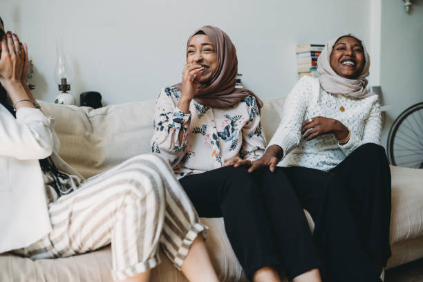

February marks the start of Black History Month. During this time of remembrance and celebration, black people around the world will be sharing their experiences to showcase the adversities and triumphs in all of our journeys. As a young, black, Muslim woman, I am honoured to be able to share my truth, which I’m sure many others can relate to as well.
During my younger years, I lived in constant anxiety, and uncertainty on what the societal perceptions of the black community really are. Public policy and modern media conditioned our minds and planted social inconsistencies to only see the black identity in a way that fulfils a complex agenda. An agenda with the contradictions of being criminalized in the news, yet idolized in pop culture. Where your image is appropriated for popularity, but your success and leadership is suppressed. An agenda where the national policy of your Western land, thrives off the exploitation of your African roots. And where your voice is loud and determined, yet silenced at the same time.
